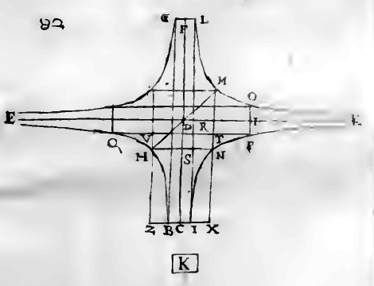

Propositio XV · Theorema XV (Solidum Hyperbolicum Infinite Latum)¶


PROP. XV. THEOR. XV. (tab. 10. fig. 82, pp. 79–80; in marg. 22. secundi conic., 5. primi Euang. Torricellij de sphæra &c.)
Solidum rotundum hyperbolicum infinitè latum æquale est cylindro, cuius oppositæ bases sunt communes, vnà cum alio cylindro recto, cuius altitudo est semiaxis solidi, semidiameter verò basis est linea æqualis mediæ proportionali inter totum axem, eiusque dimidium. Per superficies cylindricas Torricellij omnes circulis constantibus æquales demonstratur.
f. 0097 · p. 80